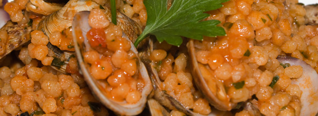

La Mia Cagliari
Cagliari
Questo è il mio posto preferito perchè :
- Amo il mare;
- Adoro la tranquillità;
- Amo la campagna;
- Amo la compagnia che si trova.
Informazioni utili
- Popolazione : 154.500;
- Grandezza dell'isola : Si estende per 4.569 chilometri quadrati.
Scopri di più
Il Cibo Di Cagliari
La pasta sarda più conosciuta sono sicuramente i malloreddus

Ingredienti :
- Gnocchetti Sardi : 400 g
- Pecorino sardo : fresco 200 g
- Olio extravergine d'oliva : 30 g
- Sale : 1 pizzico
- Salsiccia : 300 g
- Cipolle : 50 g
- Passata di pomodoro : 300 g
Guarda il video.